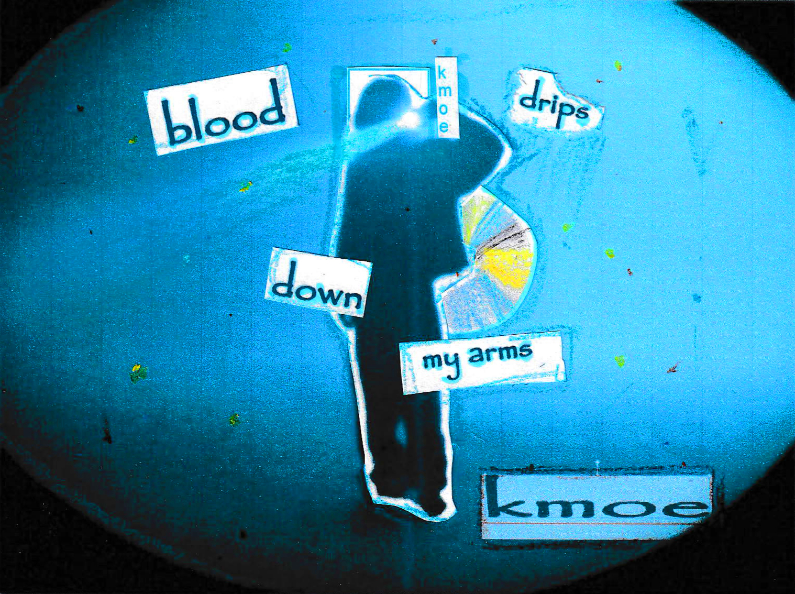
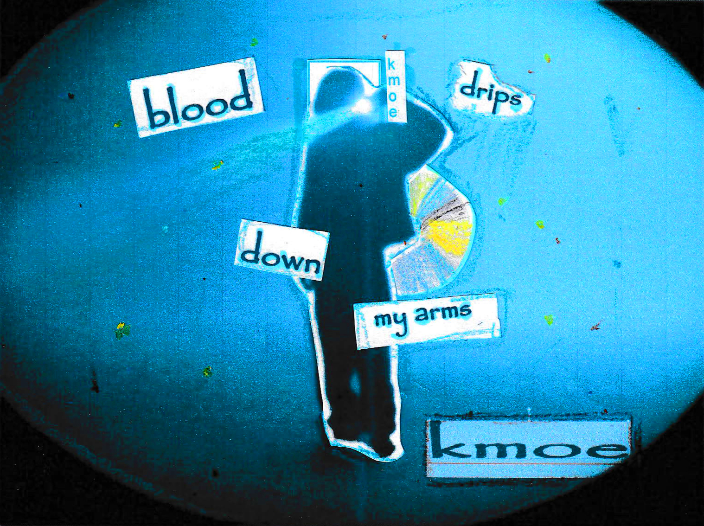

ZOMBIES GO TO HEAVEN ⋆⭒˚.⋆
about me ૮ - ﻌ • ა
name: wassim
age: 18
hi! i'm wassim! i am an algerian/british visual artist and filmmaker from london!
i produce music videos, visualisers, and short films. also an amateur guitar player :3
most recent work :>
hey plz go check this out :D
gallery 𖤐⭒⋆｡⋆⭒𖤐
 
